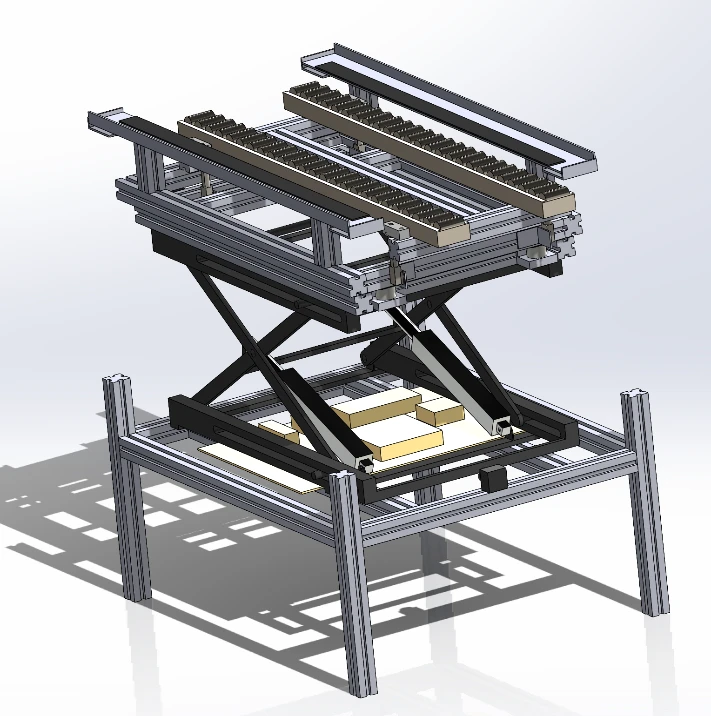
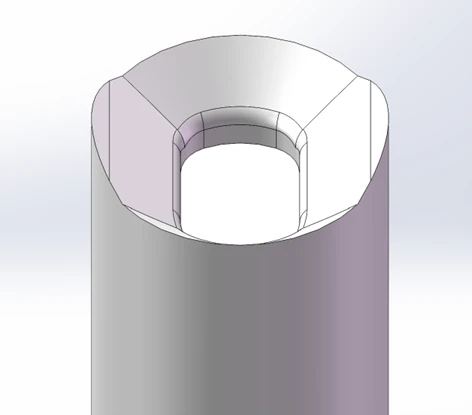
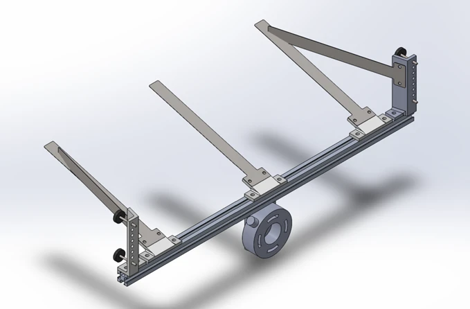
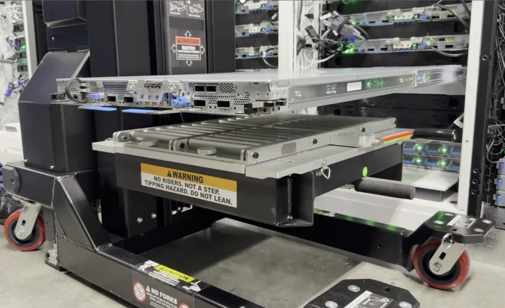

The problem
Alignment changes
once contact begins.
A server must be unlocked, supported, and moved through a narrow rack opening. Small height or pitch errors can turn a smooth insertion into a jam. As the server moves between the lift and rack, its weight shifts between the two supports; the resulting elastic deflection changes the alignment again.
The system separates the jobs: the arm operates the handles and moves the server horizontally, while an instrumented lift supports the load and adjusts its height. Vision provides the rack geometry for approaching the task. Mechanical guidance and load feedback handle the physical contact that follows.
Locate the rack
Calibrated images and optical-flow correspondences establish a common task frame.
Guide the approach
Task-specific tools and passive guides tolerate small alignment errors.
Adapt through contact
Load feedback guides height adjustments as the arm inserts or extracts the server.
Designing the mechanics around the task
Hardware & sensing
I designed the lift and task-specific end-effectors around the server's existing handles, knobs, and rack geometry. A draw-wire sensor measures height, while load sensors provide feedback about the support force.
The tools use shaped contact surfaces to turn unlocking, locking, and handling into simpler arm motions. Lead-in surfaces and a removable guide help absorb small approach errors. The lift's roller support can switch between rolling and higher-friction contact to move or secure the server.
This mechanical tolerance matters: reliable contact starts with the geometry of the tool and environment, alongside the controller.


From image correspondences to a robot task frame
Vision & calibrationThe visual pipeline combines learned image correspondences with calibrated geometry. The goal is a rack pose expressed in the robot's base frame, so the arm can use task poses defined relative to the rack.
Calibrate the camera and hand–eye transform
Camera calibration estimates the intrinsic matrix and lens distortion. For the wrist-mounted camera, hand–eye calibration estimates the fixed camera-to-end-effector transform. Robot kinematics then places each camera view in the base frame.
Find correspondences with optical flow
Rack corners are labeled in reference images. FlowFormer++ predicts a dense displacement field between a reference image and a newly captured view. Sampling that field at the labeled points transfers their locations into the new image.
Estimate the rack's rigid pose
Calibrated observations from different views constrain the rack geometry. The toolkit supports multi-view triangulation and fitting a known rack model. The fitting path estimates rotation and translation, then refines the result using pixel reprojection error.
Express actions in rack coordinates
The estimated rack-to-base transform maps a task pose into a robot command. Keeping tool targets in the rack frame allows the same task geometry to be reused after relocalizing the rack.
Coordinate transforms
One chain connects vision to action.
Let TAB map coordinates from frame B into frame A. The base (B), end-effector (E), camera (C), rack (R), and tool target (G) are related by rigid transforms.
Place the cameraTBC(q) = TBE(q) TEC
Place the tool targetTBG = TBR TRG
A reprojection overlay checks whether the estimated geometry agrees with the images. It does not by itself measure tool positioning accuracy; calibration, robot motion, and contact introduce additional error.
Using support force to reduce jamming
Arm–lift coordinationI analyzed the server's changing support conditions during insertion and extraction. When weight transfers between the lift and rack, elastic deflection changes the server's pitch. That can force the rails against rack features and increase the arm's pushing or pulling resistance.
The lift's measured support force provides feedback for small height adjustments near the critical contact region. During insertion, a small downward correction compensates for unloading; during extraction, a small upward correction compensates for loading. The arm continues the horizontal handling motion while the lift adjusts the support.
The implementation combines height positioning and force-threshold actions through ROS 2, with Modbus device access and web monitoring on Jetson. Mechanical compliance and feedback work together to make the physical operation more repeatable.

Experimental outcome
More reliable insertion
and extraction.
Before adjustment
With force-guided adjustment
Reported in the undergraduate project evaluation, with repeated handling tests at the same rack height. These rates describe the tested setup.
My contribution
From mechanical design
to robot integration.
My main responsibilities covered the instrumented lift, task-specific mechanical tools, feedback control, and the interfaces connecting the lift to the rest of the robot system.
- Lift and end-effector design, sensor integration, and passive guidance.
- Height-control modeling and validation, contact analysis, and force-guided handling adjustments.
- ROS 2 and Modbus integration, lift web APIs, and system debugging.
- Participation in applying optical-flow-based visual localization within the shared system.
The camera calibration, rack localization, and arm operation described above explain the shared project's pipeline. They are distinguished here from the components I primarily developed.